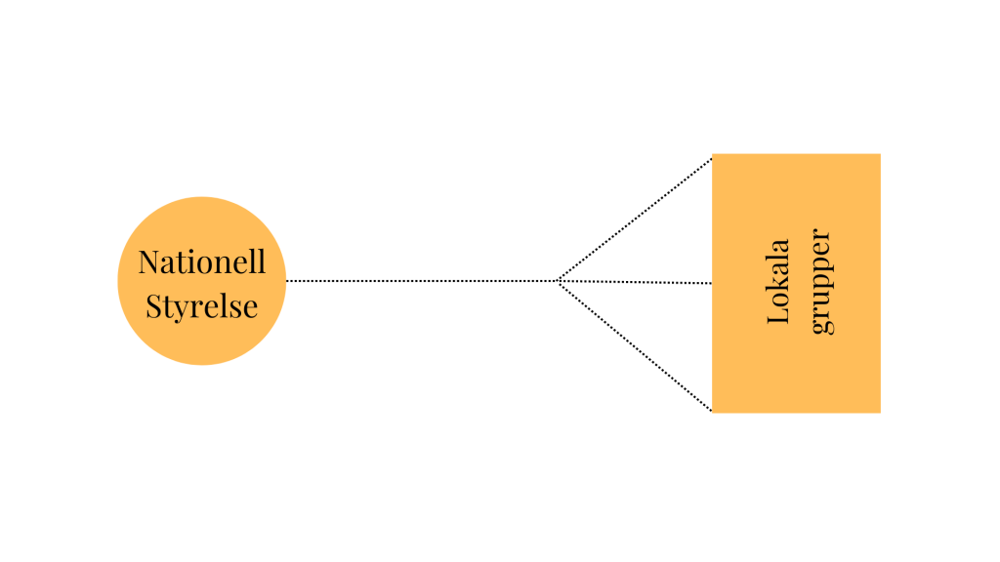
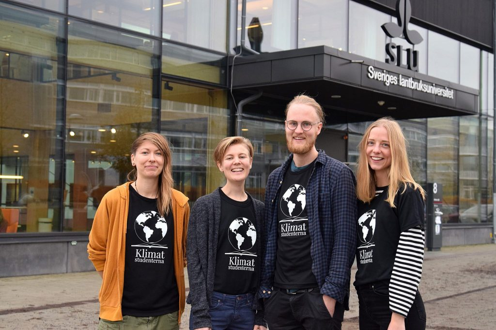
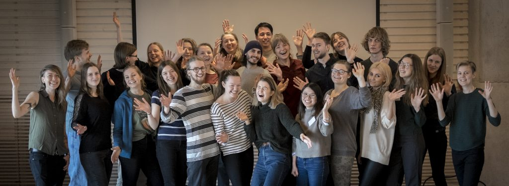

Om Klimatstudenterna Sverige
Klimatstudenternas organisatoriska struktur
{kind=link}

Klimatstudenterna består av en nationell styrelse som väljs ut i januari och maj varje år under stormöten. I styrelsen finns projektgruppen local mobilization som en gång varannan månad organiserar nationella möten där styrelsen och lokala grupper kommunicerar pågående projekt, idéer och ger råd. Runtom i Sverige finns organisationens andra beståndsdel, lokalgrupperna. De är internt organiserade på olika sätt och driver olika projekt ofta relaterade till respektive närliggande lärosäten. På sidan Gå med lokalt finns en lista över nuvarande aktiva lokalgrupper.
Verksamhet
Klimatstudenternas verksamhet är huvudsakligen följande tre punkter:
- Mobiliserar och stödjer studenter som startar upp och driver klimatstudentgrupper.
- Samverkar med respektive lärosätes ledning, styrelse, kårer och forskare kring nationella evenemang.
- Som studentrörelse stödja andra studentinitiativ för snabba utsläppsminskningar.
Ändamål
Vi vill hjälpa lärosäten att skyndsamt minska sina utsläpp så de kan minska med ca. 15 % årligen mellan åren 2019-2023 och sedan nolla ut sina utsläpp år 2030. Detta för att förhindra en global temperaturökning på 1.5 grader C.
Historien om Klimatstudenterna
Alltings början
Idén om Klimatstudenterna föddes när en student på Sveriges lantbruksuniversitet, SLU, lyssnade på ett panelsamtal med Kevin Anderson. Anderson framhöll vikten av att lärosäten agerar i linje med sin egen forskning, i publiken satt initiativtagaren Rosmarie Sundström, och så var det igång. Under september 2018 samlades en liten grupp studenter på SLU med målet att starta en nationell och internationell studentrörelse som hjälper lärosäten att ta på sig ledartröjan och agera i linje med sin egen forskning. För om inte ens de som producerar forskning lever i linje med den, vem ska då göra det? Här fanns allt som behövdes för ett vinnande koncept: ett avgränsat problem, tydliga lösningar, och studenter med en stark vilja att förändra.
“Är du student och brinner för klimatet?” löd rubriken på inlägget som spreds i Studentsverige. Det visade sig finnas många sådana, för snart hade nya Klimatstudentgrupper bildats på universitet i Uppsala, Stockholm och Göteborg. I november 2018 gick de samman, bildade formellt den nationella organisationen Klimatstudenterna Sverige och tillsatte den första nationella styrelsen.

Klimatstudenterna Sveriges första nationella styrelse, SLU, november 2018. Från vänster: Josefine Kyhlström Blomkvist, Rosmarie Sundström, Daniel Carlsson, Emma Bergeling.
En nationell studentrörelse växer fram
Lokala grupper fortsatte startas upp och gjorde ett fantastiskt arbete. På bara två veckor samlande lokalgruppen på SLU in 1186 namnunderskrifter med uppmaningen att halvera SLU:s utsläpp inom fyra år för lärosätets trovärdighet och lämnade över namninsamlingen till rektorn och miljöchefen. Klimatstudenterna Lund var drivande i Klimatuppropet som under februari 2019 samlade 4711 stundentunderskrifter för att universitetet skulle ta ledning i omställningen till ett hållbart samhälle. Andra lokala grupper hade möten med miljöchefer, samlade studenter och arrangerade föreläsningar runt om i Sverige.

Namninsamling på SLU, oktober 2018.
Rörelsen fortsatte att växa och studenter från hela landet hörde av sig med vilja att engagera sig. Digitala möten hölls, otaliga mail och chattmeddelanden skickades, och nu längtade vi efter att träffa varandra. I mars 2019 samlades representanter från lokala grupper från Luleå i norr till Lund i söder för den första Klimatstudentkonfesensen! Det var en späckad helg med diskussioner, festligheter, workshops, god mat, och en massa inspiration. Klimatstudentkonferensen har sedan dess levt kvar som en årlig höjdpunkt för rörelsen och växt i takt med rörelsen. 2019 var ett trettiotal deltagare med, och året efter var vi ett sextiotal. I februari 2020 fanns 14 lokala Klimatstudentgrupper.

Deltagare på Klimatstudentkonferensen 2019 på SLU i Uppsala.
Tidigt påverkansarbete
Samtidigt som lokala grupper bildades och jobbade på drog påverkansarbetet igång för fullt för den nationella styrelsen. Ett mål var att få in en skrivning om lärosätenas egna hållbarhetsarbete i regeringens regleringsbrevet till universitet och högskolor som lyste med sin frånvaro. Efter möten med dåvarande minister för högre utbildning och forskning Matilda Ernkrans, samtal med riksdagsledamöter, konkret förslag på skrivning och strategiskt påverkansarbete kom regleringsbrevet för 2020, och med fanns ett helt nytt stycke om hållbar utveckling som tidigare hade lyst med sin frånvaro. En tydlig framgång och konkret exempel på att det går att göra skillnad!
.jpg)
Möte med minister för högre utbilning och forskning, Uppsala, mars 2019. Med på mötet var forskare, Klimatstudenter från SLU och Uppsala universitet, lokala politiker och miljösamordnare från universiteten. Foto: Folke Bosund
De första åren var minst sagt händelserika. Vi blev uppmärksammade i nationell media, kom i kontakt med otroliga samarbetsorganisationer och forskare och miljöchefer som hjälpte oss ta kliv framåt. En annan viktig del av påverkansarbetet är Climate Action Ranking – en årlig rankning av svenska universitet och högskolors klimatarbete för att uppmärksamma de som tar kliv framåt, och synliggöra vilka som behöver göra betydligt mer. I arbetet med att utforma metodiken för rankningen kontaktade och samverkade vi med experter vid Naturvårdsverket och hållbarhets- respektive miljöledningschefer vid olika högskolor. Den första rankingen uppmärksammades bl.a. i Ekot och har sedan dess fortsatt vara en viktig del för att visa på studenters engagemang i lärosätenas omställning.
Klimatstudenterna har fortsatt att lobba för tydligare styrning mot minskade utsläpp från högskolorna. I forsknings- och innovationspropositionen från 2020 lade regeringen förslag om att modernisera högskolelagens skrivning om internationell samverkan. Den nya skrivningen tydliggör att internationalisering inte ska ske på bekostnad av hållbar utveckling. Som skäl för förändringen nämns att lärosätena har ett stort ansvar för att internationell samverkan inte har en negativ klimatpåverkan och bör finna sätt att samverka som istället kan bidra till minskad klimatpåverkan, “exempelvis genom att minska antalet tjänsteresor med flyg”, någonting som Klimatstudenterna länge argumenterat för.
En internationell rörelse växer fram – Climate Students Movement
Från allra första början var målet att få kontakt med liknande rörelser runt om i världen och att sprida Klimatstudenterna till länder där det inte fanns. Detta mål tog sig uttryck i Climate Students Movement!
Det här var en kortfattad historia om Klimatstudenterna med nedslag i händelser som vi minns med extra värme och stolthet. Vi fortsätter att engagera studenter och bedriva påverkansarbete, nationellt såväl som internationellt, med målet i sikte att hjälpa lärosäten att ta på sig ledartröjan genom att agera i linje med sin egen forskning. Tveka inte att höra av dig om du vill bli en del av rörelsen!

Klimatstudenterna på Fridays for Futures klimatstrejk i Uppsala.